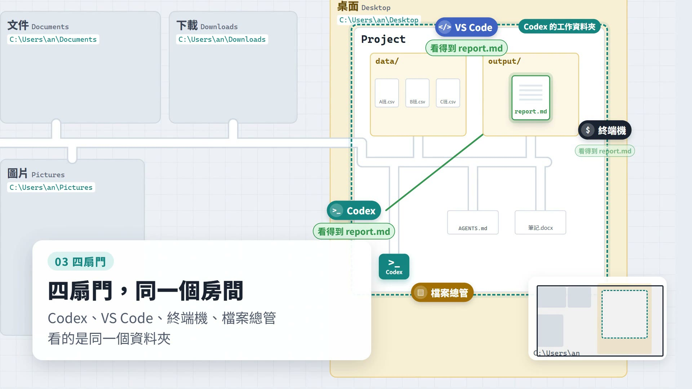

SECTION 1・影片教學
report.md 的旅程
把小安的電腦畫成一座城市，鏡頭一路跟著 report.md 這個檔案：Codex 先讀取資料、再寫出報告；開錯資料夾時報告跑去哪裡；最後照四個步驟把它找回來。影片沒有旁白，重點都在畫面字卡上。
WEEK 03
Codex、Claude Code 這類 AI Agent 都以「一個資料夾」為工作單位。這週搞懂三件事：檔案到底在哪裡、叫 Codex 做事時它實際做了什麼、找不到檔案時怎麼找回來。

C:\Users\an\Desktop\Project 這樣的路徑，知道它是檔案的完整地址。directory:、pwd、explorer . 把它找回來。SECTION 1・影片教學
把小安的電腦畫成一座城市，鏡頭一路跟著 report.md 這個檔案：Codex 先讀取資料、再寫出報告；開錯資料夾時報告跑去哪裡；最後照四個步驟把它找回來。影片沒有旁白，重點都在畫面字卡上。
SECTION 2・網頁教學
7 章文字說明，搭配 5 個可以動手操作的互動示範：點檔案看路徑、移動工作範圍、看四個視窗同步、一步一步播放 Codex 的工作過程、實驗相對路徑。最後用 5 題小測驗檢查自己。